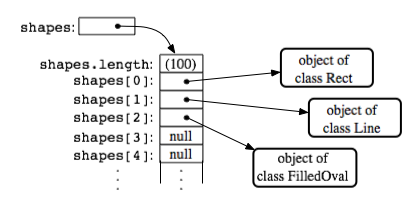

Section 7.3
Dynamic Arrays and ArrayLists
The size of an array is fixed when it is created. In many cases, however, the number of data items that are actually stored in the array varies with time. Consider the following examples: An array that stores the lines of text in a word-processing program. An array that holds the list of computers that are currently downloading a page from a Web site. An array that contains the shapes that have been added to the screen by the user of a drawing program. Clearly, we need some way to deal with cases where the number of data items in an array is not fixed.
7.3.1 Partially Full Arrays
Consider an application where the number of items that we want to store in an array changes as the program runs. Since the size of the array can't actually be changed, a separate counter variable must be used to keep track of how many spaces in the array are in use. (Of course, every space in the array has to contain something; the question is, how many spaces contain useful or valid items?)
Consider, for example, a program that reads positive integers entered by the user and stores them for later processing. The program stops reading when the user inputs a number that is less than or equal to zero. The input numbers can be kept in an array, numbers, of type int[]. Let's say that no more than 100 numbers will be input. Then the size of the array can be fixed at 100. But the program must keep track of how many numbers have actually been read and stored in the array. For this, it can use an integer variable, numCount. Each time a number is stored in the array, numCount must be incremented by one. As a rather silly example, let's write a program that will read the numbers input by the user and then print them in reverse order. (This is, at least, a processing task that requires that the numbers be saved in an array. Remember that many types of processing, such as finding the sum or average or maximum of the numbers, can be done without saving the individual numbers.)
public class ReverseInputNumbers {
public static void main(String[] args) {
int[] numbers; // An array for storing the input values.
int numCount; // The number of numbers saved in the array.
int num; // One of the numbers input by the user.
numbers = new int[100]; // Space for 100 ints.
numCount = 0; // No numbers have been saved yet.
TextIO.putln("Enter up to 100 positive integers; enter 0 to end.");
while (true) { // Get the numbers and put them in the array.
TextIO.put("? ");
num = TextIO.getlnInt();
if (num <= 0)
break;
numbers[numCount] = num;
numCount++;
}
TextIO.putln("\nYour numbers in reverse order are:\n");
for (int i = numCount - 1; i >= 0; i--) {
TextIO.putln( numbers[i] );
}
} // end main();
} // end class ReverseInputNumbers
It is especially important to note that the variable numCount plays a dual role. It is the number of items that have been entered into the array. But it is also the index of the next available spot in the array. For example, if 4 numbers have been stored in the array, they occupy locations number 0, 1, 2, and 3. The next available spot is location 4. When the time comes to print out the numbers in the array, the last occupied spot in the array is location numCount - 1, so the for loop prints out values starting from location numCount - 1 and going down to 0.
Let's look at another, more realistic example. Suppose that you write a game program, and that players can join the game and leave the game as it progresses. As a good object-oriented programmer, you probably have a class named Player to represent the individual players in the game. A list of all players who are currently in the game could be stored in an array, playerList, of type Player[]. Since the number of players can change, you will also need a variable, playerCt, to record the number of players currently in the game. Assuming that there will never be more than 10 players in the game, you could declare the variables as:
Player[] playerList = new Player[10]; // Up to 10 players. int playerCt = 0; // At the start, there are no players.
After some players have joined the game, playerCt will be greater than 0, and the player objects representing the players will be stored in the array elements playerList[0], playerList[1], ..., playerList[playerCt-1]. Note that the array element playerList[playerCt] is not in use. The procedure for adding a new player, newPlayer, to the game is simple:
playerList[playerCt] = newPlayer; // Put new player in next
// available spot.
playerCt++; // And increment playerCt to count the new player.
Deleting a player from the game is a little harder, since you don't want to leave a "hole" in the array. Suppose you want to delete the player at index k in playerList. If you are not worried about keeping the players in any particular order, then one way to do this is to move the player from the last occupied position in the array into position k and then to decrement the value of playerCt:
playerList[k] = playerList[playerCt - 1]; playerCt--;
The player previously in position k is no longer in the array. The player previously in position playerCt - 1 is now in the array twice. But it's only in the occupied or valid part of the array once, since playerCt has decreased by one. Remember that every element of the array has to hold some value, but only the values in positions 0 through playerCt - 1 will be looked at or processed in any way. (By the way, you should think about what happens if the player that is being deleted is in the last position in the list. The code does still work in this case. What exactly happens?)
Suppose that when deleting the player in position k, you'd like to keep the remaining players in the same order. (Maybe because they take turns in the order in which they are stored in the array.) To do this, all the players in positions k+1 and above must move down one position in the array. Player k+1 replaces player k, who is out of the game. Player k+2 fills the spot left open when player k+1 is moved. And so on. The code for this is
for (int i = k+1; i < playerCt; i++) {
playerList[i-1] = playerList[i];
}
playerCt--;
It's worth emphasizing that the Player example deals with an array whose base type is a class. An item in the array is either null or is a reference to an object belonging to the class, Player. The Player objects themselves are not really stored in the array, only references to them. Note that because of the rules for assignment in Java, the objects can actually belong to subclasses of Player. Thus there could be different classes of players such as computer players, regular human players, players who are wizards, ..., all represented by different subclasses of Player.
As another example, suppose that a class Shape represents the general idea of a shape drawn on a screen, and that it has subclasses to represent specific types of shapes such as lines, rectangles, rounded rectangles, ovals, filled-in ovals, and so forth. (Shape itself would be an abstract class, as discussed in Subsection 5.5.5.) Then an array of type Shape[] can hold references to objects belonging to the subclasses of Shape. For example, the situation created by the statements
Shape[] shapes = new Shape[100]; // Array to hold up to 100 shapes. shapes[0] = new Rect(); // Put some objects in the array. shapes[1] = new Line(); shapes[2] = new FilledOval(); int shapeCt = 3; // Keep track of number of objects in array.
could be illustrated as:

Such an array would be useful in a drawing program. The array could be used to hold a list of shapes to be displayed. If the Shape class includes a method, "void redraw(Graphics g)", for drawing the shape in a graphics context g, then all the shapes in the array could be redrawn with a simple for loop:
for (int i = 0; i < shapeCt; i++) shapes[i].redraw(g);
The statement "shapes[i].redraw(g);" calls the redraw() method belonging to the particular shape at index i in the array. Each object knows how to redraw itself, so that repeated executions of the statement can produce a variety of different shapes on the screen. This is nice example both of polymorphism and of array processing.
7.3.2 Dynamic Arrays
In each of the above examples, an arbitrary limit was set on the number of items -- 100 ints, 10 Players, 100 Shapes. Since the size of an array is fixed, a given array can only hold a certain maximum number of items. In many cases, such an arbitrary limit is undesirable. Why should a program work for 100 data values, but not for 101? The obvious alternative of making an array that's so big that it will work in any practical case is not usually a good solution to the problem. It means that in most cases, a lot of computer memory will be wasted on unused space in the array. That memory might be better used for something else. And what if someone is using a computer that could handle as many data values as the user actually wants to process, but doesn't have enough memory to accommodate all the extra space that you've allocated for your huge array?
Clearly, it would be nice if we could increase the size of an array at will. This is not possible, but what is possible is almost as good. Remember that an array variable does not actually hold an array. It just holds a reference to an array object. We can't make the array bigger, but we can make a new, bigger array object and change the value of the array variable so that it refers to the bigger array. Of course, we also have to copy the contents of the old array into the new array. The array variable then refers to an array object that contains all the data of the old array, with room for additional data. The old array will be garbage collected, since it is no longer in use.
Let's look back at the game example, in which playerList is an array of type Player[] and playerCt is the number of spaces that have been used in the array. Suppose that we don't want to put a pre-set limit on the number of players. If a new player joins the game and the current array is full, we just make a new, bigger one. The same variable, playerList, will refer to the new array. Note that after this is done, playerList[0] will refer to a different memory location, but the value stored in playerList[0] will still be the same as it was before. Here is some code that will do this:
// Add a new player, even if the current array is full.
if (playerCt == playerList.length) {
// Array is full. Make a new, bigger array,
// copy the contents of the old array into it,
// and set playerList to refer to the new array.
int newSize = 2 * playerList.length; // Size of new array.
Player[] temp = new Player[newSize]; // The new array.
System.arraycopy(playerList, 0, temp, 0, playerList.length);
playerList = temp; // Set playerList to refer to new array.
}
// At this point, we KNOW there is room in the array.
playerList[playerCt] = newPlayer; // Add the new player...
playerCt++; // ...and count it.
If we are going to be doing things like this regularly, it would be nice to define a reusable class to handle the details. An array-like object that changes size to accommodate the amount of data that it actually contains is called a dynamic array. A dynamic array supports the same operations as an array: putting a value at a given position and getting the value that is stored at a given position. But there is no upper limit on the positions that can be used (except those imposed by the size of the computer's memory). In a dynamic array class, the put and get operations must be implemented as instance methods. Here, for example, is a class that implements a dynamic array of ints:
/**
* An object of type DynamicArrayOfInt acts like an array of int
* of unlimited size. The notation A.get(i) must be used instead
* of A[i], and A.set(i,v) must be used instead of A[i] = v.
*/
public class DynamicArrayOfInt {
private int[] data; // An array to hold the data.
/**
* Constructor creates an array with an initial size of 1,
* but the array size will be increased whenever a reference
* is made to an array position that does not yet exist.
*/
public DynamicArrayOfInt() {
data = new int[1];
}
/**
* Get the value from the specified position in the array.
* Since all array elements are initialized to zero, when the
* specified position lies outside the actual physical size
* of the data array, a value of 0 is returned. Note that
* a negative value of position will still produce an
* ArrayIndexOutOfBoundsException.
*/
public int get(int position) {
if (position >= data.length)
return 0;
else
return data[position];
}
/**
* Store the value in the specified position in the array.
* The data array will increase in size to include this
* position, if necessary.
*/
public void put(int position, int value) {
if (position >= data.length) {
// The specified position is outside the actual size of
// the data array. Double the size, or if that still does
// not include the specified position, set the new size
// to 2*position.
int newSize = 2 * data.length;
if (position >= newSize)
newSize = 2 * position;
int[] newData = new int[newSize];
System.arraycopy(data, 0, newData, 0, data.length);
data = newData;
// The following line is for demonstration purposes only !!
System.out.println("Size of dynamic array increased to " + newSize);
}
data[position] = value;
}
} // end class DynamicArrayOfInt
The data in a DynamicArrayOfInt object is actually stored in a regular array, but that array is discarded and replaced by a bigger array whenever necessary. If numbers is a variable of type DynamicArrayOfInt, then the command numbers.put(pos,val) stores the value val at position number pos in the dynamic array. The function numbers.get(pos) returns the value stored at position number pos.
The first example in this section used an array to store positive integers input by the user. We can rewrite that example to use a DynamicArrayOfInt. A reference to numbers[i] is replaced by numbers.get(i). The statement "numbers[numCount] = num;" is replaced by "numbers.put(numCount,num);". Here's the program:
public class ReverseWithDynamicArray {
public static void main(String[] args) {
DynamicArrayOfInt numbers; // To hold the input numbers.
int numCount; // The number of numbers stored in the array.
int num; // One of the numbers input by the user.
numbers = new DynamicArrayOfInt();
numCount = 0;
TextIO.putln("Enter some positive integers; Enter 0 to end");
while (true) { // Get numbers and put them in the dynamic array.
TextIO.put("? ");
num = TextIO.getlnInt();
if (num <= 0)
break;
numbers.put(numCount, num); // Store num in the dynamic array.
numCount++;
}
TextIO.putln("\nYour numbers in reverse order are:\n");
for (int i = numCount - 1; i >= 0; i--) {
TextIO.putln( numbers.get(i) ); // Print the i-th number.
}
} // end main();
} // end class ReverseWithDynamicArray
The following applet simulates this program. I've included an output statement in the DynamicArrayOfInt class. This statement will inform you each time the data array increases in size. (Of course, the output statement doesn't really belong in the class. It's included here for demonstration purposes.)
7.3.3 ArrrayLists
The DynamicArrayOfInt class could be used in any situation where an array of int with no preset limit on the size is needed. However, if we want to store Shapes instead of ints, we would have to define a new class to do it. That class, probably named "DynamicArrayOfShape", would look exactly the same as the DynamicArrayOfInt class except that everywhere the type "int" appears, it would be replaced by the type "Shape". Similarly, we could define a DynamicArrayOfDouble class, a DynamicArrayOfPlayer class, and so on. But there is something a little silly about this, since all these classes are close to being identical. It would be nice to be able to write some kind of source code, once and for all, that could be used to generate any of these classes on demand, given the type of value that we want to store. This would be an example of generic programming. Some programming languages, including C++, have had support for generic programming for some time. With version 5.0, Java introduced true generic programming, but even before that it had something that was very similar: One can come close to generic programming in Java by working with data structures that contain elements of type Object. We will first consider the almost-generic programming that has been available in Java from the beginning, and then we will look at the change that was introduced in Java 5.0. A full discussion of generic programming will be given in Chapter 10.
In Java, every class is a subclass of the class named Object. This means that every object can be assigned to a variable of type Object. Any object can be put into an array of type Object[]. If we defined a DynamicArrayOfObject class, then we could store objects of any type. This is not true generic programming, and it doesn't apply to the primitive types such as int and double. But it does come close. In fact, there is no need for us to define a DynamicArrayOfObject class. Java already has a standard class named ArrayList that serves much the same purpose. The ArrayList class is in the package java.util, so if you want to use it in a program, you should put the directive "import java.util.ArrayList;" at the beginning of your source code file.
The ArrayList class differs from my DynamicArrayOfInt class in that an ArrayList object always has a definite size, and it is illegal to refer to a position in the ArrayList that lies outside its size. In this, an ArrayList is more like a regular array. However, the size of an ArrayList can be increased at will. The ArrayList class defines many instance methods. I'll describe some of the most useful. Suppose that list is a variable of type ArrayList. Then we have:
- list.size() -- This function returns the current size of the ArrayList. The only valid positions in the list are numbers in the range 0 to list.size()-1. Note that the size can be zero. A call to the default constructor new ArrayList() creates an ArrayList of size zero.
- list.add(obj) -- Adds an object onto the end of the list, increasing the size by 1. The parameter, obj, can refer to an object of any type, or it can be null.
- list.get(N) -- This function returns the value stored at position N in the ArrayList. N must be an integer in the range 0 to list.size()-1. If N is outside this range, an error of type IndexOutOfBoundsException occurs. Calling this function is similar to referring to A[N] for an array, A, except that you can't use list.get(N) on the left side of an assignment statement.
- list.set(N, obj) -- Assigns the object, obj, to position N in the ArrayList, replacing the item previously stored at position N. The integer N must be in the range from 0 to list.size()-1. A call to this function is equivalent to the command A[N] = obj for an array A.
- list.remove(obj) -- If the specified object occurs somewhere in the ArrayList, it is removed from the list. Any items in the list that come after the removed item are moved down one position. The size of the ArrayList decreases by 1. If obj occurs more than once in the list, only the first copy is removed.
- list.remove(N) -- For an integer, N, this removes the N-th item in the ArrayList. N must be in the range 0 to list.size()-1. Any items in the list that come after the removed item are moved down one position. The size of the ArrayList decreases by 1.
- list.indexOf(obj) -- A function that searches for the object, obj, in the ArrayList. If the object is found in the list, then the position number where it is found is returned. If the object is not found, then -1 is returned.
For example, suppose again that players in a game are represented by objects of type Player. The players currently in the game could be stored in an ArrayList named players. This variable would be declared as
ArrayList players;
and initialized to refer to a new, empty ArrayList object with
players = new ArrayList();
If newPlayer is a variable that refers to a Player object, the new player would be added to the ArrayList and to the game by saying
players.add(newPlayer);
and if player number i leaves the game, it is only necessary to say
players.remove(i);
Or, if player is a variable that refers to the Player that is to be removed, you could say
players.remove(player);
All this works very nicely. The only slight difficulty arises when you use the function players.get(i) to get the value stored at position i in the ArrayList. The return type of this function is Object. In this case the object that is returned by the function is actually of type Player. In order to do anything useful with the returned value, it's usually necessary to type-cast it to type Player:
Player plr = (Player)players.get(i);
For example, if the Player class includes an instance method makeMove() that is called to allow a player to make a move in the game, then the code for letting every player make a move is
for (int i = 0; i < players.size(); i++) {
Player plr = (Player)players.get(i);
plr.makeMove();
}
The two lines inside the for loop can be combined to a single line:
((Player)players.get(i)).makeMove();
This gets an item from the list, type-casts it, and then calls the makeMove() method on the resulting Player. The parentheses around "(Player)players.get(i)" are required because of Java's precedence rules. The parentheses force the type-cast to be performed before the makeMove() method is called.
For-each loops work for ArrayLists just as they do for arrays. But note that since the items in an ArrayList are only known to be Objects, the type of the loop control variable must be Object. For example, the for loop used above to let each Player make a move could be written as the for-each loop
for ( Object plrObj : players ) {
Player plr = (Player)plrObj;
plr.makeMove();
}
In the body of the loop, the value of the loop control variable, plrObj, is one of the objects from the list, players. This object must be type-cast to type Player before it can be used.
In Subsection 5.5.5, I discussed a program, ShapeDraw, that uses ArrayLists. Here is another version of the same idea, simplified to make it easier to see how ArrayList is being used. The program supports the following operations: Click the large white drawing area to add a colored rectangle. (The color of the rectangle is given by a "rainbow palette" along the bottom of the applet; click the palette to select a new color.) Drag rectangles using the right mouse button. Hold down the Alt key and click on a rectangle to delete it. Shift-click a rectangle to move it out in front of all the other rectangles. You can try an applet version of the program here:
Source code for the main panel for this program can be found in SimpleDrawRects.java. You should be able to follow the source code in its entirety. (You can also take a look at the file RainbowPalette.java, which defines the color palette shown at the bottom of the applet, if you like.) Here, I just want to look at the parts of the program that use an ArrayList.
The applet uses a variable named rects, of type ArrayList, to hold information about the rectangles that have been added to the drawing area. The objects that are stored in the list belong to a static nested class, ColoredRect, that is defined as
/**
* An object of type ColoredRect holds the data for one colored rectangle.
*/
private static class ColoredRect {
int x,y; // Upper left corner of the rectangle.
int width,height; // Size of the rectangle.
Color color; // Color of the rectangle.
}
If g is a variable of type Graphics, then the following code draws all the rectangles that are stored in the list rects (with a black outline around each rectangle):
for (int i = 0; i < rects.size(); i++) {
ColoredRect rect = (ColoredRect)rects.get(i);
g.setColor( rect.color );
g.fillRect( rect.x, rect.y, rect.width, rect.height);
g.setColor( Color.BLACK );
g.drawRect( rect.x, rect.y, rect.width - 1, rect.height - 1);
}
The i-th rectangle in the list is obtained by calling rects.get(i). Since this method returns a value of type Object, the return value must be typecast to its actual type, ColoredRect, to get access to the data that it contains.
To implement the mouse operations, it must be possible to find the rectangle, if any, that contains the point where the user clicked the mouse. To do this, I wrote the function
/**
* Find the topmost rect that contains the point (x,y). Return null
* if no rect contains that point. The rects in the ArrayList are
* considered in reverse order so that if one lies on top of another,
* the one on top is seen first and is returned.
*/
ColoredRect findRect(int x, int y) {
for (int i = rects.size() - 1; i >= 0; i--) {
ColoredRect rect = (ColoredRect)rects.get(i);
if ( x >= rect.x && x < rect.x + rect.width
&& y >= rect.y && y < rect.y + rect.height )
return rect; // (x,y) is inside this rect.
}
return null; // No rect containing (x,y) was found.
}
The code for removing a ColoredRect, rect, from the drawing area is simply rects.remove(rect) (followed by a repaint()). Bringing a given rectangle out in front of all the other rectangles is just a little harder. Since the rectangles are drawn in the order in which they occur in the ArrayList, the rectangle that is in the last position in the list is in front of all the other rectangles on the screen. So we need to move the selected rectangle to the last position in the list. This can most easily be done in a slightly tricky way using built-in ArrayList operations: The rectangle is simply removed from its current position in the list and then added back at the end of the list:
void bringToFront(ColoredRect rect) {
if (rect != null) {
rects.remove(rect); // Remove rect from the list.
rects.add(rect); // Add it back; it will be placed in the last position.
repaint();
}
}
This should be enough to give you the basic idea. You can look in the source code for more details.
7.3.4 Parameterized Types
The main difference between true generic programming and the ArrayList examples in the previous subsection is the use of the type Object as the basic type for objects that are stored in a list. This has at least two unfortunate consequences: First, it makes it necessary to use type-casting in almost every case when an element is retrieved from that list. Second, since any type of object can legally be added to the list, there is no way for the compiler to detect an attempt to add the wrong type of object to the list; the error will be detected only at run time when the object is retrieved from the list and the attempt to type-cast the object fails. Compare this to arrays. An array of type BaseType[] can only hold objects of type BaseType. An attempt to store an object of the wrong type in the array will be detected by the compiler, and there is no need to type-cast items that are retrieved from the array back to type BaseType.
To address this problem, Java 5.0 introduced parameterized types. ArrayList is an example: Instead of using the plain "ArrayList" type, it is possible to use ArrayList<BaseType>, where BaseType is any object type, that is, the name of a class or of an interface. (BaseType cannot be one of the primitive types.) ArrayList<BaseType> can be used to create lists that can hold only objects of type BaseType. For example,
ArrayList<ColoredRect> rects;
declares a variable named rects of type ArrayList<ColoredRect>, and
rects = new ArrayList<ColoredRect>();
sets rects to refer to a newly created list that can only hold objects belonging to the class ColoredRect (or to a subclass). The funny-looking name "ArrayList<ColoredRect>" is being used here in exactly the same way as an ordinary class name -- don't let the "<ColoredRect>" confuse you; it's just part of the name of the type. When a statement such as rects.add(x); occurs in the program, the compiler can check whether x is in fact of type ColoredRect. If not, the compiler will report a syntax error. When an object is retrieved from the list, the compiler knows that the object must be of type ColoredRect, so no type-cast is necessary. You can say simply:
ColoredRect rect = rects.get(i)
You can even refer directly to an instance variable in the object, such as rects.get(i).color. This makes using ArrayList<ColoredRect> very similar to using ColoredRect[] with the added advantage that the list can grow to any size. Note that if a for-each loop is used to process the items in rects, the type of the loop control variable can be ColoredRect, and no type-cast is necessary. For example, when using ArrayList<ColoredRect> as the type for the list rects, the code for drawing all the rectangles in the list could be rewritten as:
for ( ColoredRect rect : rects ) {
g.setColor( rect.color );
g.fillRect( rect.x, rect.y, rect.width, rect.height );
g.setColor( Color.BLACK );
g.drawRect( rect.x, rect.y, rect.width - 1, rect.height - 1 );
}
You can use ArrayList<ColoredRect> anyplace where you could use a normal type: to declare variables, as the type of a formal parameter in a subroutine, or as the return type of a subroutine. You can even create a subclass of ArrayList<ColoredRect>! (Nevertheless, technically speaking, ArrayList<ColoredRect> is not considered to be a separate class from ArrayList. An object of type ArrayList<ColoredRect> actually belongs to the class ArrayList, but the compiler restricts the type of objects that can be added to the list.)
The only drawback to using parameterized types is that the base type cannot be a primitive type. For example, there is no such thing as "ArrayList<int>". However, this is not such a big drawback as it might seem at first, because of the "wrapper types" and "autoboxing" that were introduced in Subsection 5.3.2. A wrapper type such as Double or Integer can be used as a base type for a parameterized type. An object of type ArrayList<Double> can hold objects of type Double. Since each object of type Double holds a value of type double, it's almost like having a list of doubles. If numlist is declared to be of type ArrayList<Double> and if x is of type double, then the value of x can be added to the list by saying:
numlist.add( new Double(x) );
Furthermore, because of autoboxing, the compiler will automatically do double-to-Double and Double-to-double type conversions when necessary. This means that the compiler will treat "numlist.add(x)" as being equivalent to "numlist.add( new Double(x) )". So, behind the scenes, "numlist.add(x)" is actually adding an object to the list, but it looks a lot as if you are working with a list of doubles.
The sample program SimplePaint2.java demonstrates the use of parameterized types. In this program, the user can sketch curves in a drawing area by clicking and dragging with the mouse. The curves can be of any color, and the user can select the drawing color using a menu. The background color of the drawing area can also be selected using a menu. And there is a "Control" menu that contains several commands: An "Undo" command, which removes the most recently drawn curve from the screen, a "Clear" command that removes all the curves, and a "Use Symmetry" command that turns a symmetry feature on and off. Curves that are drawn by the user when the symmetry option is on are reflected horizontally and vertically to produce a symmetric pattern. You can try an applet version of the program here:
Unlike the original SimplePaint program in Subsection 6.4.4, this new version uses a data structure to store information about the picture that has been drawn by the user. This data is used in the paintComponent() method to redraw the picture whenever necessary. Thus, the picture doesn't disappear when, for example, the picture is covered and then uncovered. The data structure is implemented using ArrayLists.
The main data for a curve consists of a list of the points on the curve. This data can be stored in an object of type ArrayList<Point>, where java.awt.Point is one of Java's standard classes. (A Point object contains two public integer variables x and y that represent the coordinates of a point.) However, to redraw the curve, we also need to know its color, and we need to know whether the symmetry option should be applied to the curve. All the data that is needed to redraw the curve can be grouped into an object of type CurveData that is defined as
private static class CurveData {
Color color; // The color of the curve.
boolean symmetric; // Are horizontal and vertical reflections also drawn?
ArrayList<Point> points; // The points on the curve.
}
However, a picture can contain many curves, not just one, so to store all the data necessary to redraw the entire picture, we need a list of objects of type CurveData. For this list, we can use a variable curves declared as
ArrayList<CurveData> curves = new ArrayList<CurveData>();
Here we have a list of objects, where each object contains a list of points as part of its data! Let's look at a few examples of processing this data structure. When the user clicks the mouse on the drawing surface, it's the start of a new curve, and a new CurveData object must be created and added to the list of curves. The instance variables in the new CurveData object must also be initialized. Here is the code from the mousePressed() routine that does this:
currentCurve = new CurveData(); // Create a new CurveData object.
currentCurve.color = currentColor; // The color of the curve is taken from an
// instance variable that represents the
// currently selected drawing color.
currentCurve.symmetric = useSymmetry; // The "symmetric" property of the curve
// is also copied from the current value
// of an instance variable, useSymmetry.
currentCurve.points = new ArrayList<Point>(); // Create a new point list object.
currentCurve.points.add( new Point(evt.getX(), evt.getY()) );
// The point where the user pressed the mouse is the first point on
// the curve. A new Point object is created to hold the coordinates
// of that point and is added to the list of points for the curve.
curves.add(currentCurve); // Add the CurveData object to the list of curves.
As the user drags the mouse, new points are added to currentCurve, and repaint() is called. When the picture is redrawn, the new point will be part of the picture.
The paintComponent() method has to use the data in curves to draw all the curves. The basic structure is a for-each loop that processes the data for each individual curve in turn. This has the form:
for ( CurveData curve : curves ) {
.
. // Draw the curve represented by the object, curve, of type CurveData.
.
}
In the body of this loop, curve.points is a variable of type ArrayList<Point> that holds the list of points on the curve. The i-th point on the curve can be obtained by calling the get() method of this list: curve.points.get(i). This returns a value of type Point which contains instance variables named x and y. We can refer directly to the x-coordinate of the i-th point as:
curve.points.get(i).x
This might seem rather complicated, but it's a nice example of a complex name that specifies a path to a desired piece of data: Go to the object, curve. Inside curve, go to points. Inside points, get the i-th item. And from that item, get the instance variable named x. Here is the complete definition of the paintComponent() method:
public void paintComponent(Graphics g) {
super.paintComponent(g);
for ( CurveData curve : curves) {
g.setColor(curve.color);
for (int i = 1; i < curve.points.size(); i++) {
// Draw a line segment from point number i-1 to point number i.
int x1 = curve.points.get(i-1).x;
int y1 = curve.points.get(i-1).y;
int x2 = curve.points.get(i).x;
int y2 = curve.points.get(i).y;
g.drawLine(x1,y1,x2,y2);
if (curve.symmetric) {
// Also draw the horizontal and vertical reflections
// of the line segment.
int w = getWidth();
int h = getHeight();
g.drawLine(w-x1,y1,w-x2,y2);
g.drawLine(x1,h-y1,x2,h-y2);
g.drawLine(w-x1,h-y1,w-x2,h-y2);
}
}
}
} // end paintComponent()
I encourage you to read the full source code, SimplePaint2.java. In addition to serving as an example of using parameterized types, it also serves as another example of creating and using menus.
7.3.5 Vectors
The ArrayList class was introduced in Java version 1.2, as one of a group of classes designed for working with collections of objects. We'll look at these "collection classes" in Chapter 10. Early versions of Java did not include ArrayList, but they did have a very similar class named java.util.Vector. You can still see Vectors used in older code and in many of Java's standard classes, so it's worth knowing about them. Using a Vector is similar to using an ArrayList, except that different names are used for some commonly used instance methods, and some instance methods in one class don't correspond to any instance method in the other class.
Like an ArrayList, a Vector is similar to an array of Objects that can grow to be as large as necessary. The default constructor, new Vector(), creates a vector with no elements. Suppose that vec is a Vector. Then we have:
- vec.size() -- a function that returns the number of elements currently in the vector.
- vec.elementAt(N) -- returns the N-th element of the vector, for an integer N. N must be in the range 0 to vec.size()-1. This is the same as get(N) for an ArrayList.
- vec.setElementAt(obj,N) -- sets the N-th element in the vector to be obj. N must be in the range 0 to vec.size()-1. This is the same as set(N,obj) for an ArrayList.
- vec.addElement(obj) -- adds the Object, obj, to the end of the vector. This is the same as the add() method of an ArrayList.
- vec.removeElement(obj) -- removes obj from the vector, if it occurs. Only the first occurrence is removed. This is the same as remove(obj) for an ArrayList.
- vec.removeElementAt(N) -- removes the N-th element, for an integer N. N must be in the range 0 to vec.size()-1. This is the same as remove(N) for an ArrayList.
- vec.setSize(N) -- sets the size of the vector to N. If there were more than N elements in vec, the extra elements are removed. If there were fewer than N elements, extra spaces are filled with null. The ArrayList class, unfortunately, does not have a setSize() method.
The Vector class includes many more methods, but these are probably the most commonly used. Note that in Java 5.0, Vector can be used as a paramaterized type in exactly the same way as ArrayList. That is, if BaseType is any class or interface name, then Vector<BaseType> represents vectors that can hold only objects of type BaseType.